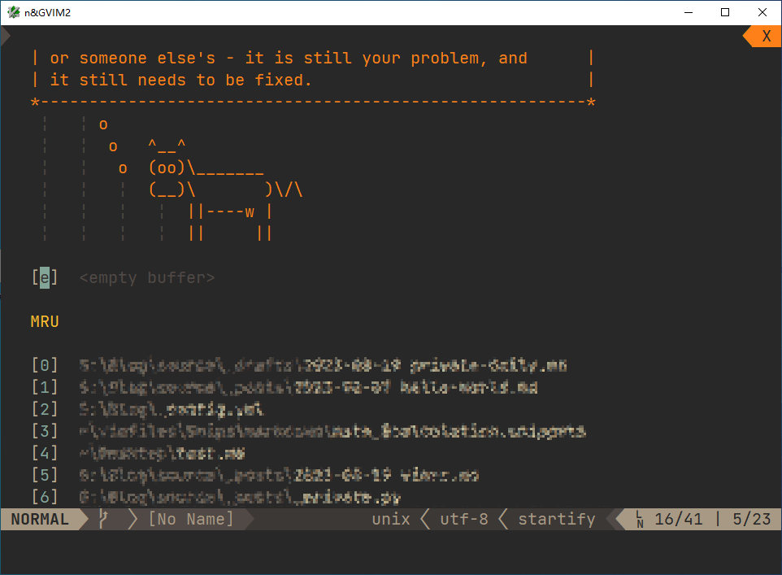

已过时
本篇内容已过时，Vim 配置已经发生了翻天覆地的变化，适时会开新篇重写。
因篇幅有限，本篇内容仅包括配置文件 .vimrc 的介绍，最多会稍微提及其余相关配置，但不会作为主要内容。
由于我的配置文件比较杂乱，注释信息少，很多以前配的内容现在已经遗忘了。于是出于加深对自己配置的了解，同时边重温边更新或修正的目的，决定写下这篇博文。也为将来投 NeoVim 打好基础 。
设置
基本
第一部分 Set 有点多，也没分类，我就每 15 行单拎出来吧。
同时这一部分很多都是网上东拼西凑抄过来的，很多即使我看 help 也不知所以，因此也不会细谈。
1 2 3 4 5 6 7 8 9 10 11 12 13 14 15 set nocompatibleset fileformat=unixset fileencodings=utf-8 ,gbk2312,gbk,gb18030,cp936set encoding=utf-8 set nobombset magicset smartcaseset laststatus=2 set showtabline=2 set history =1024 set autochdirset whichwrap=b ,<,>,[,]set backspace=indent ,eol,startset clipboard+=unnamedset winaltkeys=no
设置了 magic，大概是为了搜索方便吧。
设置 winaltkeys 为 no，毕竟我要映射 Alt ，同时我不需要用 Alt 访问菜单（毕竟都没菜单了）。
1 2 3 4 5 6 7 8 9 10 set langmenu=zh_CNset cursorlineset hlsearchset incsearchset number set relativenumberset wrapset linebreakset splitbelowset splitright
设置 cursorline，方便看到正在编辑的行。
设置 hlsearch，高亮搜索。
设置 number 和 relativenumber，显示相对行号。
设置 wrap 和 linebreak，长行在相对合理（有时效果不如在最后一个字符断开）地方回绕。
设置 splitbelow 和 splitright，优先向下和向右分割窗口。
1 2 3 4 5 6 7 8 9 10 11 12 set guioptions-=e set guioptions-=gset guioptions-=m set guioptions-=rset guioptions-=Lset guioptions-=tset guioptions-=Tset autoindentset smartindentset foldmethod=markerset guifont=JetBrains_Mono:h15set guifontwide=Microsoft_Yahei_Mono:h15
guioptions 去掉 egmrLtT，好像就啥也不剩了（默认也才 egmrLT）。这样一通设置后，Vim 窗口打开就是下面那样了。

当然这还是很不爽，最上面的白框框太突兀了，这时候就要用 AutoHotkey 了。
Vim.ahk GitHub 1 2 3 4 5 6 7 8 9 10 11 12 13 14 15 16 17 18 19 20 21 22 23 24 25 26 27 28 #Requires AutoHotkey v1.1+ SysGet WorkAreaInfo, MonitorWorkArea ListJoin(list, string) { for index, content in list str .= string . content return SubStr(str, StrLen(string) + 1 ) } !q:: Clip := ClipboardAll Clipboard := "" SendInput {Ctrl Down}c{Ctrl Up} ClipWait 0 if InStr(Clipboard , "`r`n" ) Run % "gvim -d " "" ListJoin(StrSplit(Clipboard , "`r`n" ), "" " " "" ) "" "" , , , process_idelse if !ErrorLevel Run gvim "%Clipboard%" , , , process_id else Run gvim, , , process_id Process Priority, %process_id% , High WinWait ahk_pid %process_id% , , 10 WinSet Style, -0 xC40000, ahk_pid %process_id% WinMove ahk_pid %process_id% , , 0 , 0 , %WorkAreaInfoRight% , %WorkAreaInfoBottom% WinActivate ahk_pid %process_id% Clipboard := Clipreturn
AutoHotkey 的内容就不细谈的，毕竟要东拉西扯的话这篇博文不知道要写多长多久。简单来说这个脚本的作用就是按 Alt + Q 打开无白框框的 gVim 窗口。
当没选择文件时，直接打开空白窗口；当选择了一个文件时，打开该文件；当选择了多个文件时，对比多个文件。
当然还是有缺陷的：选择文本时会打开文件名为该文本的窗口，多行文本则会进行对比。
但是总的来说还是够用的。快捷键在写，在测试时只是随便赋的，结果一直用到现在，好不好用我也不好评价，习惯了倒是真的。
设置 autoindent 和 smartindent，自动智能缩进。
设置 foldmethod 为 marker，指定用标志折叠。这个设置可能不太好。
设置 guifont 为 JetBrains Mono，guifontwide 为 Microsoft Yahei Mono。微软雅黑 Mono 是为了弥补中文字体而设置的。尝试过设置 Nerd Font，但是怎么弄都不行，于是就放弃了。
1 2 3 4 5 6 7 8 9 10 11 12 13 14 15 16 17 18 19 20 21 22 set conceallevel=2 set wildmenuset scrolloff=10 set noshowmodeset tabstop=4 set expandtabset softtabstop=4 set shiftwidth =4 set viewoptions-=options set undofile set undodir=D:\Temp\.vim \.undo \set directory=D:\Temp\.vim \.swap\set viewdir=D:\Temp\.vim \.view \set shortmess+=Fset background=darkset listchars=tab :!>,trail:·,lead:·set list set gdefaultset titlestring=%{mode ()}\&%{v:servername }let $LANG = 'en_US.UTF-8' let &pythonthreedll = 'D:\Program Files\Python\python310.dll'
设置 wildmenu，应该与补全有关。
设置 scrolloff 为 10，防止蒙着眼横冲直撞。
设置 noshowmode，有了状态栏就不用了。
设置 tabstop 为 4，默认制表符长度为 4 个空格。有时觉得有点长了。同时设置 expandtab，我好像不是很喜欢制表符。softtabstop 应该是相关设置。
viewoptions 去掉了 options，于是只剩下 view 了 ，剩余 folds,cursor,curdir。即下次打开相同文件时保留折叠、光标和窗口目录，不保留局部选项和映射。
undodir directory viewdir 分别是「撤销文件位置」「交换文件所在位置」和「view 储存位置」。
shortmess 增加 F 变成 filnxtToOSF，这个选项解决了编辑文件时有时会出现要多按一下才能继续编辑的问题。
background 设置深色主题。
list 和 listchars 设置制表符和首尾空格的显示方式。
gdefault 默认全局替换。难怪，我就说为什么有时候开 g 选项反而没有全局替换，原来是开了 gdefault 啊。
titlestring 设置为 %{mode()}\&%{v:servername}，像上面一样 n&GVIM2 就是一个例子。第一个字符表示模式。后面 GVIM 表示第一个窗口，GVIM2 表示这是第三个 gVim 窗口。可以用来与 AutoHotkey 交互。下面是一个例子。
Vim.ahk GitHub 1 2 3 4 5 6 7 8 9 10 11 12 13 14 15 16 17 18 19 20 21 22 #Requires AutoHotkey v1.1+ IsNotEnglish() { DetectHiddenWindows On WinGet winid, ID, A wintitle := "ahk_id " DllCall("imm32\ImmGetDefaultIMEWnd" , "Uint" , winid, "Uint" ) SendMessage 0 x283, 0 x001, 0 , , %wintitle% DetectHiddenWindows Off return ErrorLevel } #If WinActive("^(i|s|v|V)") CapsLock:: SendInput ô+CapsLock:: SendInput {Shift Down}ô{Shift Up}#If WinActive("^i") and IsNotEnglish() #Hotstring * C0 ? X ::jkk:: SendInput {Esc}::kjj:: SendInput {Esc}
在插入、选择、Visual 及多行 Visual 模式下，CapsLock 会被映射为「ô」（即 Alt + T ）。
已经改为如下所示的快捷键。
1 2 3 4 5 6 #HotIf WinActive("^(i|s|v|V)") && WinActive("ahk_class Vim") CapsLock:: SendInput("{Alt Down}{F12}{Alt Up}" )+CapsLock:: SendInput("{Alt Down}{Shift Down}{F12}{Shift Up}{Alt Up}" )^CapsLock:: SendInput("{Ctrl Down}{Alt Down}{F12}{Alt Up}{Ctrl Up}" )^+CapsLock:: SendInput("{Ctrl Down}{Shift Down}{Alt Down}{F12}{Alt Up}{Shift Up}{Ctrl Up}" )
将 CapsLock 映射为一个几乎用不到的键 Alt + F12 ，具体内容在讲 UltiSnips 时再谈。
在插入模式且非英文输入下，jkk 和 kjj 会退出插入模式。本来用的是 jk 和 kj ，但是误触率不小（毕竟以这些为辅音的词语可不少），于是改成这样，但是这样导致中文输入下退出难度增大，还没有养成肌肉记忆。
当然还有一点弊端，这样咋知道这是 Vim 窗口？一个标题名为「visual」的窗口也会触发，原本是不会的，后来我为了精简标题而删掉无关文本。还是要加个的。 后来加入了 ahk_class 的判断，消除了这个问题。
$LANG 设置为 en_US.UTF-8，可能是为了避免提示信息中英混杂吧。
&pythonthreedll 设置 Python。有段时间打开 Vim 时一直报错，经过我严密的测试发现问题出在 Vim 9.0 patch 845 上（根据我的备忘录记录，撰博时未再次测试），也许是编译的人环境发生了变化，我没看出有什么端倪。最后设置了这个才好。
1 2 3 4 filetype plugin indent on syntax enablecolorscheme gruvbox
上面两行设置在了杂项下，主题设置在了插件下。
杂项
1 2 3 4 5 6 7 8 9 10 11 12 13 14 if &term == 'win32' if exists ('+termguicolors' ) let &t_8f = "\<Esc>[38;2;%lu;%lu;%lum" let &t_8b = "\<Esc>[48;2;%lu;%lu;%lum" set termguicolors endif let &t_SI .= "\e[5 q" let &t_SR .= "\e[3 q" let &t_EI .= "\e[0 q" autocmd VimEnter * silent !echo -ne "\e[0 q" autocmd VimLeave * silent !echo -ne "\e[5 q" endif
备注了个 WindowsTerminal，查了一下应该是修改 Windows Terminal 下 Vim 的光标形状。不过其实我现在用 gVim，完全可以把这个删掉。
1 2 3 4 5 6 7 augroup auto_view autocmd! autocmd BufWinLeave *.* mkview autocmd BufWinEnter *.* silent loadview augroup end
自动记录和加载 view，本来还有 _vimrc 的，但是我改名为 .vimrc 后就删掉了。
1 2 3 4 5 6 7 augroup spell_check autocmd! autocmd FileType tex,markdown,gitcommit setlocal spell spelllang=en_us,cjk autocmd FileType tex,markdown,gitcommit inoremap <silent> <C-n> <C-g> u <Esc> [s1z=`'a<C-g>u " }}}1 augroup end
自动更正拼写，目前用于 markdown, TeX \TeX T E X Ctrl + N 。Castel 的原映射如下。我不知道怎么改了一点，我记得我在用 Castel 的映射时出现了一点问题，于是进行了部分修改。
inoremap <C-l> <c-g> u <Esc> [s1z=`]a <c-g> u
1 2 3 4 5 6 7 8 9 10 11 12 13 14 let g:clipboard = {\ 'name' : 'win32yank' , \ 'copy' : { \ '+' : 'win32yank.exe -i --crlf' , \ '*' : 'win32yank.exe -i --crlf' , \ }, \ 'paste' : { \ '+' : 'win32yank.exe -o --lf' , \ '*' : 'win32yank.exe -o --lf' , \ }, \ 'cache_enabled' : 0 , \ }
好像是用来互通剪贴板的？
插件
1 2 3 4 5 6 7 8 9 10 11 12 13 14 15 16 17 18 19 20 21 22 23 24 25 26 27 28 29 30 31 32 33 let g:language_types = ['python' , 'javascript' , 'vim' , 'autohotkey' ]call plug#begin("~/vimfiles/plugged" )Plug 'morhetz/gruvbox' Plug 'yianwillis/vimcdoc' Plug 'preservim/nerdtree' Plug 'Xuyuanp/nerdtree-git-plugin' Plug 'itchyny/lightline.vim' Plug 'mengelbrecht/lightline-bufferline' Plug 'maximbaz/lightline-ale' , { 'for' : g:language_types } Plug 'mhinz/vim-startify' Plug 'junegunn/vim-easy-align' Plug 'neoclide/coc.nvim' , { 'branch' : 'release' } Plug 'dense-analysis/ale' , { 'for' : g:language_types } Plug 'SirVer/ultisnips' Plug 'Yggdroot/LeaderF' Plug 'tpope/vim-fugitive' Plug 'tpope/vim-commentary' Plug 'tpope/vim-repeat' Plug 'pilgrimlyieu/vim-surround' Plug 'easymotion/vim-easymotion' Plug 'ZSaberLv0/vim-easymotion-chs' Plug 'mg979/vim-visual-multi' Plug 'luochen1990/rainbow' Plug 'Yggdroot/indentLine' Plug 'lervag/vimtex' , { 'for' : ['tex' , 'markdown' ] } Plug 'pilgrimlyieu/md-img-paste.vim' , { 'for' : 'markdown' } Plug 'mzlogin/vim-markdown-toc' , { 'for' : 'markdown' } Plug 'python-mode/python-mode' , { 'for' : 'python' , 'branch' : 'develop' } Plug 'rrethy/vim-hexokinase' , { 'do' : 'make hexokinase' } Plug 'vim-autoformat/vim-autoformat' call plug#end()
gruvbox：主题。
vimcdoc：中文文档。
nerdtree：显示文件列表。
nerdtree-git-plugin：NerdTree 集成 Git。
lightline：状态栏。
lightline-bufferline：缓冲区栏。
lightline-ale：状态栏显示语法警告错误信息等。
vim-startify：开始面板。没怎么见过，也就没修改了，使用了默认的。
vim-easy-align：对齐。
coc.nvim：代码补全。
ale：语法检查。
ultisnips：Snippets 工具。
LeaderF：搜索。
vim-fugitive：Git。
vim-commentary：注释。
vim-repeat：重复操作（为适配部分插件如 vim-surround 等）
vim-surround：添加引号、括号、标签等。因为作者不知出于什么原因没有 merge 一个重要 PR: Support deleting/changing custom surrounds ，我就 Fork 了一个（没用 PR 作者的，怕他删掉了）。
vim-easymotion：快速移动。
vim-easymotion-chs：为快速移动添加中文拼音支持。
vim-visual-multi：多光标。
rainbow：彩色括号。
indentLine：缩进线。刚刚去看才发现 archived 了。
vimtex：提供 TeX \TeX T E X
md-img-paste.vim：markdown 插入剪贴板图片。我根据自己需求 Fork 然后改了一点。前些日子里不小心 Revert 了，靠本地文件恢复，只是就不知道我落后几个 commits 了，也许有些错误修复。
vim-markdown-toc：创建目录。只不过现在似乎用处不大。
python-mode：Python 支持。感觉也用处不大。Python 写得少，要么摸鱼要么在写 AutoHotkey ，而且我 Python 可能不在 Vim 里写。
vim-hexokinase：显示色彩。有时倒让人啼笑皆非，例如微软的 Azure 也会显示颜色。这个去看发现也 archived 了。看到它有个 Fork 有 10 多个 commits ahead，看样子是添加了 LaTeX \LaTeX L A T E X
vim-autoformat：格式化代码。
映射
1 2 3 4 5 6 let g:mapleader = " " function! Execute (cmd) execute a:cmd return '' endfunction
设置 Leader 键为空格键。同时定义一个执行函数方便调用。
1 2 3 4 5 6 7 8 9 10 11 12 13 14 15 16 inoremap jk <Esc> inoremap kj <Esc> nnoremap U <C-r> vnoremap ; :nnoremap ; :nnoremap : ,nnoremap , ;nnoremap ` ' nnoremap ' `noremap H 0 onoremap H 0 noremap L $onoremap L $nnoremap <expr> 0 col ('.' ) == 1 ? '^' : '0' nnoremap <C-f> <C-d> nnoremap <C-b> <C-u>
jk 和 kj 上面谈过了。
U 重做。
; 进入命令模式，这样只用按一个键，比较方便。
, 重复寻找命令，因为 ; 被占用了，用 , 替代。
: 用来反向寻找。原因同上。
交换了 ' 和 ` ，精准位置应该更方便按才行。
H 和 L 分别到行首和行尾。
0 可以在行首和行首非空白字符跳转。
剩下两个就是翻页了，改为翻半页（用整页主要是因为好按）。
1 2 nnoremap <silent> <leader> o :<C-u> call append (line ("." ), repeat (["" ], v:count1 ))<CR> nnoremap <silent> <leader> O :<C-u> call append (line ("." )-1 , repeat (["" ], v:count1 ))<CR>
用来在 normal 模式插入空行（光标位置不动），摘抄自 Stack Overflow
1 2 3 4 nnoremap <silent> <leader> / :noh <Cr> vnoremap / /\vnnoremap ? ?\vvnoremap ? ?\v
查找。Space + / 清除高亮搜索结果。\v 应该是为了更 Magic。
1 2 3 4 5 6 7 8 9 10 11 12 inoremap <silent> <C-j> <C-r> =Execute('normal! <C-v><C-w>j<C-v><Esc>' )<Cr> inoremap <silent> <C-k> <C-r> =Execute('normal! <C-v><C-w>k<C-v><Esc>' )<Cr> inoremap <silent> <C-h> <C-r> =Execute('normal! <C-v><C-w>h<C-v><Esc>' )<Cr> inoremap <silent> <C-l> <C-r> =Execute('normal! <C-v><C-w>l<C-v><Esc>' )<Cr> nnoremap <C-j> <C-W> j nnoremap <C-k> <C-W> k nnoremap <C-h> <C-W> hnnoremap <C-l> <C-W> l nnoremap <C-S-j> <C-W> -nnoremap <C-S-k> <C-W> +nnoremap <C-S-h> <C-W> <nnoremap <C-S-l> <C-W> >
这些是用来调整窗口的。窗口切换不用多说，插入和普通模式都加入了。窗口大小的变动遵循「上加下减，左减右加」原则，即按左下角窗口的视角调整。
1 2 3 4 nnoremap k gknnoremap gk k nnoremap j gjnnoremap gj j
回绕处理。
ga 用来对齐了，用 gA 接任显示 ASCII 值的任务。
1 2 3 4 5 6 7 8 9 10 11 12 13 14 15 16 17 18 inoremap <silent> <C-s> <C-r> =Execute('w' )<Cr> inoremap <silent> <C-q> <C-r> =Execute('x' )<Cr> inoremap <silent> <C-S-q> <C-r> =Execute('q!' )<Cr> inoremap <silent> <C-S-c> <C-r> =Execute('bw' )<Cr> nnoremap <C-q> ZZnnoremap <C-S-q> ZQnnoremap <silent> <C-s> :w <Cr> nnoremap <leader> q ZZnnoremap <leader> Q ZQnnoremap <silent> <leader> w :w <Cr> nnoremap <silent> <S-Esc> :qa!<Cr> vnoremap <C-q> <Esc> ZZvnoremap <C-S-q> <Esc> ZQvnoremap <silent> <C-s> <Esc> :w <Cr> vnoremap <silent> <S-Esc> <Esc> :qa!<Cr>
基本上就是保存和退出命令。不知道为什么注释了几个清除缓冲区的，但是我也不敢动。
1 2 3 4 tnoremap <F1> <C-\><C-N> tnoremap <S-F1> <C-W> <C-C> tnoremap <silent> <S-F5> <C-W> N :bw!<Cr> nnoremap <silent> <S-F5> :call CloseTerminal()<CR>
终端。可以说大概是我的 .vimrc 里自主完成最精致的一部分了。这部分只是映射罢了。F1 暂停终端，切换到终端普通模式。Shift + F1 结束作业。Shift + F5 抹杀终端。
1 2 nnoremap Q <Nop> nnoremap gq Q
经常误触进入 Ex 模式，改成 gq 。
1 2 3 4 5 set mouse=noremap <ScrollWheelUp> <nop> noremap <ScrollWheelDown> <nop> inoremap <ScrollWheelUp> <nop> inoremap <ScrollWheelDown> <nop>
禁用鼠标。
插件
这里的下辖标题不代表插件名称，只代表这在我的 .vimrc 被放在一个 part 里。出于「历史原因」，可能会莫名其妙。
vim-surround
1 2 3 4 5 6 7 8 9 10 11 12 let g:surround_ {char2nr ('（' )} = "（\r）" let g:surround_ {char2nr ('）' )} = "（\r）" let g:surround_ {char2nr ('【' )} = "【\r】" let g:surround_ {char2nr ('】' )} = "【\r】" let g:surround_ {char2nr ('《' )} = "《\r》" let g:surround_ {char2nr ('》' )} = "《\r》" let g:surround_ {char2nr ('‘' )} = "「\r」" let g:surround_ {char2nr ('’' )} = "「\r」" let g:surround_ {char2nr ('“' )} = "『\r』" let g:surround_ {char2nr ('”' )} = "『\r』"
加入了中文标点。不过「【】」没啥用的样子。
Markdown
这就来了，不是插件。
1 2 3 4 5 6 7 8 9 10 11 12 13 14 15 autocmd FileType markdown inoremap <silent> <C-p> <C-r> =Execute('call mdip#MarkdownClipboardImage()' )<Cr> autocmd FileType markdown inoremap <silent> <C-t> <C-r> =Execute('UpdateToc' )<Cr> autocmd FileType markdown nnoremap <silent> <leader> mt :UpdateToc<Cr> autocmd FileType markdown vnoremap <silent> <leader> vl <Plug> (EasyAlign)*<C-x> \\\@<!<Bar> <Cr> autocmd FileType markdown vnoremap <silent> <leader> vr <Plug> (EasyAlign)*<C-a> <Bs> r<Cr> <C-x> \\\@<!<Bar> <Cr> autocmd FileType markdown vnoremap <silent> <leader> vv <Plug> (EasyAlign)*<C-a> <Bs> c <Cr> <C-x> \\\@<!<Bar> <Cr> autocmd FileType markdown nnoremap <silent> <leader> vl <Plug> (EasyAlign)ip*<C-x> \\\@<!<Bar> <Cr> autocmd FileType markdown nnoremap <silent> <leader> vr <Plug> (EasyAlign)ip*<C-a> <Bs> r<Cr> <C-x> \\\@<!<Bar> <Cr> autocmd FileType markdown nnoremap <silent> <leader> vv <Plug> (EasyAlign)ip*<C-a> <Bs> c <Cr> <C-x> \\\@<!<Bar> <Cr> autocmd FileType markdown inoreabbr <silent> toc <C-r> =Execute('GenTocGFM' )<Cr> autocmd FileType markdown let b:coc_pairs_disabled = ["'" ]
第一个是 Ctrl + X 添加特制分隔符，用于已经弃用的高中 ENotebook。因此注释掉了。
然后是 Ctrl + P 加入图片及 Ctrl + T 更新目录，都是插入模式的。正常模式则是 Space + M + T
接下来六个如果我没记错的话是表格对齐，前缀是 Space + V ，然后 l r v 分别代表左、右、中对齐。
toc 则是从没用过的缩写，生成 GFM 格式的 TOC。
b:coc_pairs_disabled 则是 coc-pairs 的一个选项，我设置不会自动补全 '，理由忘了，但这种莫名其妙的设置一定是有深意的，所以也就不动了。
1 2 3 4 5 6 let g:vmt_auto_update_on_save = 0 let g:vmt_fence_text = 'TOC Start' let g:vmt_fence_closing_text = 'TOC End' let g:vmt_list_item_char = '-' let g:mdip_imgdir = 'images' let g:mdip_imgname = ''
TOC 和保存图片的设置，浅显易懂，也没啥好解释的。
VimTeX
这里比较重量级，毕竟配置内容多，又是到处抄。
1 2 3 4 5 6 7 8 9 10 11 12 13 14 let g:tex_conceal = '' let g:vimtex_view_general_viewer = 'SumatraPDF' " gvim --servername GVIM --remote-send " <C-\><C-n> :drop %f <CR> :%l <CR> :normal! zzzv<CR> :execute 'drop ' . fnameescape ('%f' )<CR> :%l <CR> :normal! zzzv<CR> :call remote_foreground ('GVIM' )<CR> <CR> let g:vimtex_view_general_options = '-reuse-instance -forward-search @tex @line @pdf'
我似乎关闭了 conceal，这个功能吧不好评价。默认是 admgs，即替换重音/连写体、定界符、数学符号、希腊字母及上下标。
注释掉了 g:vimtex_view_method，采用了 g:vimtex_view_general_viewer 为 SumatraPDF。
SumatraPDF Setting 是自己加的注释。应该就是把下面内容加入 SumatraPDF 设置里。
1 2 3 4 5 6 7 8 9 10 11 12 13 14 15 16 " see " :help vimtex-compiler let g:vimtex_compiler_method = 'latexmk' " following line. The default is usually fine and is the symbol " \let maplocalleader = "," let g:tex_flavor = "latex" let g:vimtex_texcount_custom_arg = " -ch -total" autocmd FileType tex noremap <buffer> <silent> <leader> lw :VimtexCountWords! <CR> <CR>
使用推荐的 latexmk 作为编译后端。同时映射了一个局部 Leader 键 , ，没怎么用过。
g:tex_flavor 采用 latex，没什么好说的。
最后一个选项应该是统计字数什么的。
然后映射了 ,lw 来统计字数。
1 2 3 4 5 6 7 8 9 10 11 12 13 14 15 16 17 18 19 20 21 22 23 24 25 26 27 let g:Tex_ViewRule_pdf = 'D:\Program Files\SumatraPDF\SumatraPDF.exe -reuse-instance -inverse-search "gvim -c \":RemoteOpen +\%l \%f\""' let g:vimtex_compiler_latexmk_engines = { \ '_' : '-pdf' , \ 'pdflatex' : '-pdf' , \ 'dvipdfex' : '-pdfdvi' , \ 'lualatex' : '-lualatex' , \ 'xelatex' : '-xelatex' , \ 'context (pdftex)' : '-pdf -pdflatex=texexec' , \ 'context (luatex)' : '-pdf -pdflatex=context' , \ 'context (xetex)' : '-pdf -pdflatex=' 'texexec --xtx' '' , \} let g:vimtex_compiler_latexmk = { \ 'out_dir' : {-> 'out' }, \ 'callback' : 1 , \ 'continuous' : 1 , \ 'executable' : 'latexmk' , \ 'hooks' : [], \ 'options' : [ \ '-verbose' , \ '-file-line-error' , \ '-shell-escape' , \ '-synctex=1' , \ '-interaction=nonstopmode' , \ ], \}
这些设置都是抄的，不明所以，更是动也不敢动。
1 2 3 4 5 6 7 let g:vimtex_syntax_conceal_disable = 1 let g:vimtex_quickfix_open_on_warning = 0 let g:vimtex_toggle_fractions = { \ 'frac' : 'dfrac' , \ 'dfrac' : 'frac' , \}
禁用 conceal 及编译警告。
然后是分数切换。
1 2 3 4 augroup vimtex_config autocmd! autocmd User VimtexEventQuit call vimtex#compiler#clean(0 ) augroup end
这个是被我注释掉的。用处是清理副产品。
这个配置得找个机会大改一下。之前不怎么用 LaTeX \LaTeX L A T E X
查了一下我配置的出处大概是这里 。
UltiSnips
万恶之源。
1 2 3 4 5 6 let g:UltiSnipsExpandTrigger = '<C-e>' let g:UltiSnipsListSnippets = '<S-Tab>' let g:UltiSnipsJumpForwardTrigger = 'ô' let g:UltiSnipsJumpBackwardTrigger = '<S-ô>' let g:UltiSnipsEditSplit = "vertical" let g:UltiSnipsSnippetDirectories = ['Snips' ]
也很清晰。Ctrl + E 触发；Shift + Tab 列举；CapsLock 及 Shift + CapsLock 跳转。垂直分割打开编辑窗口；Snippets 存在 Snips 里。
一开始用的是全 Tab ，但是冲突确实严重。然后改成 CapsLock 触发，Tab 跳转，但是缩进还是用到了 Tab 。最后完全放弃 Tab ，但是确实不如之前舒服了。Ctrl + E 这个键我也觉得不好，可能要改。
1 2 3 4 5 6 let g:UltiSnipsEditSplit = "vertical" let g:UltiSnipsSnippetDirectories = ["Snips" ]let g:UltiSnipsListSnippets = "<C-S-A-F12>" let g:UltiSnipsExpandTrigger = "<C-A-F12>" let g:UltiSnipsJumpForwardTrigger = "<A-F12>" let g:UltiSnipsJumpBackwardTrigger = "<A-S-F12>"
上面说了将 CapsLock 映射为了 Alt + F12 。也就是说 Ctrl + Shift + CapsLock 可以显示这里能触发什么 snippets；Ctrl + CapsLock 可以展开 snippets；CapsLock 及 Shift + CapsLock 能跳转 tabstops。这个快捷键设置就合理且方便多了。
1 2 inoremap <silent> <A-F12> <C-r> =IncreaseColNumber()<Cr> inoremap <silent> <A-S-F12> <C-r> =DecreaseColNumber()<Cr>
同时还为跳转键加了两个 Tabout 映射，这样即使无法跳转 tabstops 也能起到功效。具体见 Tabout 那里。
nnoremap <silent> <C-d> <Esc> :call UltiSnips#RefreshSnippets()<Cr>
这是用来 Debug Snippets 的。使用 Ctrl + D 刷新 Snippets。唯一不足就是 pythonx 文件的修改仍然需要重启。
2023 年 9 月 29 日更新
在魔改 UltiSnips 源码的同时又进行了部分改动。
以上的快捷键需要 Ctrl + CapsLock 才能展开 snippet，终究还是不爽。于是希望 CapsLock 能同时起到展开和跳转的功能，在歧义时优先展开，但为了歧义时也能正常跳转，我还为 Ctrl + CapsLock 单独映射了跳转的功能，如下：
1 2 3 4 5 let g:UltiSnipsExpandTrigger = "<A-F12>" let g:UltiSnipsJumpForwardTrigger = "<A-F12>" inoremap <silent> <C-A-F12> <C-r> =UltiSnips#JumpForwards()<Cr> snoremap <silent> <C-A-F12> <Esc> :call UltiSnips#JumpForwards()<Cr>
但实际体验中我发现，我觉得优先考虑跳转似乎会好一点。不过 UltiSnips 并不支持，于是我依葫芦画瓢魔改了一下源码并提交了一个 PR(Add JumpOrExpand support )，目前还未合并。
按照我的 PR，只需要改为下面就好了：
1 2 3 4 let g:UltiSnipsJumpOrExpandTrigger = "<A-F12>" inoremap <silent> <C-A-F12> <C-r> =UltiSnips#ExpandSnippet()<Cr> snoremap <silent> <C-A-F12> <Esc> :call UltiSnips#ExpandSnippet()<Cr>
但我发现这样一来，就无法使用 Tabout 了。即使按文档中三元表达式方法，我也没能成功（因为没两个 Trigger 它就原样映射了，我也懒得加判断了）。于是我就再魔改了一下（当然没提交到 PR，纯粹自用），把映射 i s 的部分禁用了：
1 2 3 4 5 6 7 8 9 10 11 12 13 14 15 16 17 18 19 20 21 22 23 24 25 26 27 function! UltiSnips #map_keys#MapKeys() abort if 0 if exists ("g:UltiSnipsExpandOrJumpTrigger" ) exec "inoremap <silent> " . g:UltiSnipsExpandOrJumpTrigger . " <C-R>=UltiSnips#ExpandSnippetOrJump()<cr>" exec "snoremap <silent> " . g:UltiSnipsExpandOrJumpTrigger . " <Esc>:call UltiSnips#ExpandSnippetOrJump()<cr>" elseif exists ("g:UltiSnipsJumpOrExpandTrigger" ) exec "inoremap <silent> " . g:UltiSnipsJumpOrExpandTrigger . " <C-R>=UltiSnips#JumpOrExpandSnippet()<cr>" exec "snoremap <silent> " . g:UltiSnipsJumpOrExpandTrigger . " <Esc>:call UltiSnips#JumpOrExpandSnippet()<cr>" elseif g:UltiSnipsExpandTrigger == g:UltiSnipsJumpForwardTrigger exec "inoremap <silent> " . g:UltiSnipsExpandTrigger . " <C-R>=UltiSnips#ExpandSnippetOrJump()<cr>" exec "snoremap <silent> " . g:UltiSnipsExpandTrigger . " <Esc>:call UltiSnips#ExpandSnippetOrJump()<cr>" else exec "inoremap <silent> " . g:UltiSnipsExpandTrigger . " <C-R>=UltiSnips#ExpandSnippet()<cr>" exec "snoremap <silent> " . g:UltiSnipsExpandTrigger . " <Esc>:call UltiSnips#ExpandSnippet()<cr>" endif endif exec "xnoremap <silent> " . g:UltiSnipsExpandTrigger . " :call UltiSnips#SaveLastVisualSelection()<cr>gvs" if len (g:UltiSnipsListSnippets ) > 0 exec "inoremap <silent> " . g:UltiSnipsListSnippets . " <C-R>=UltiSnips#ListSnippets()<cr>" exec "snoremap <silent> " . g:UltiSnipsListSnippets . " <Esc>:call UltiSnips#ListSnippets()<cr>" endif snoremap <silent> <BS> <c-g> snoremap <silent> <DEL> <c-g> snoremap <silent> <c-h> <c-g> snoremap <c-r> <c-g> endf
然后配置文件改为如下（相同部分略）：
1 2 3 4 5 6 7 8 9 10 11 12 let g:ulti_expand_or_jump_res = 0 function! Ulti_JumpOrExpand_and_getRes () call UltiSnips#JumpOrExpandSnippet() return g:ulti_expand_or_jump_res endfunction let g:UltiSnipsExpandTrigger = "<A-F12>" inoremap <silent> <A-F12> <C-r> =(Ulti_JumpOrExpand_and_getRes() > 0 ) ? "" : IncreaseColNumber()<Cr> snoremap <silent> <A-F12> <Esc> :exec (Ulti_JumpOrExpand_and_getRes() > 0 ) ? "" : IncreaseColNumber()<Cr> inoremap <silent> <C-A-F12> <C-r> =UltiSnips#ExpandSnippet()<Cr> snoremap <silent> <C-A-F12> <Esc> :call UltiSnips#ExpandSnippet()<Cr>
最后删掉之前的一行映射即可：
inoremap <silent> <A-F12> <C-r> =IncreaseColNumber()<Cr>
同时我还把 snippet_manager.py 相关的 _handle_failure() 注释了，原因和一个 issue(if expand fails, the trigger key is inserted ) 一样。
easymotion
1 2 3 4 5 6 7 8 9 10 11 12 13 14 15 16 17 18 19 20 21 let g:EasyMotion_enter_jump_first = 1 nnoremap <leader> j <Plug> (easymotion-j )nnoremap <leader> k <Plug> (easymotion-k )nnoremap <leader> h <Plug> (easymotion-linebackward)nnoremap <leader> l <Plug> (easymotion-lineforward)nnoremap <leader> . <Plug> (easymotion-repeat )nnoremap <leader> f <Plug> (easymotion-f )nnoremap <leader> F <Plug> (easymotion-F)nnoremap <leader> t <Plug> (easymotion-t)nnoremap <leader> T <Plug> (easymotion-T)nnoremap <leader> <leader> f <Plug> (easymotion-f2)nnoremap <leader> <leader> F <Plug> (easymotion-F2)nnoremap <leader> <leader> t <Plug> (easymotion-t2)nnoremap <leader> <leader> T <Plug> (easymotion-T2)nnoremap <leader> s <Plug> (easymotion-s)nnoremap s <Plug> (easymotion-s2)nnoremap / <Plug> (easymotion-sn )\vonoremap / <Plug> (easymotion-tn )\vnnoremap n <Plug> (easymotion-next )nnoremap N <Plug> (easymotion-prev )
基本上就是 Space 加操作符 hjklfFtTs 进行对应跳转。除了单独一个 s ，因为不常用额外配置了。然后用其搜索替换了自带正向搜索。
vim-visual-multi
1 2 3 4 5 6 7 8 9 10 11 12 let g:VM_theme = 'iceblue' let g:VM_maps = {}let g:VM_maps ["Exit" ] = '<C-c>' let g:VM_maps ["Add Cursor Down" ] = '<A-s>' let g:VM_maps ["Add Cursor Up" ] = '<A-w>' let g:VM_maps ["Select l" ] = '<A-d>' let g:VM_maps ["Select h" ] = '<A-a>' let g:VM_maps ["Move Left" ] = '<A-S-a>' let g:VM_maps ["Move Right" ] = '<A-S-d>' let g:VM_maps ["Undo" ] = 'u' let g:VM_maps ["Redo" ] = 'U'
这些键击还是比较好理解的。Ctrl + C 本身就常作为退出键；WASD 也算是移动的经典按键。
LeaderF
这也是经典抄配置的例子了。应该来自这篇博文 。
1 2 3 4 5 6 7 8 9 10 11 12 13 14 15 16 17 18 19 let g:Lf_WorkingDirectoryMode = 'AF' let g:Lf_RootMarkers = ['.git' , '.root' ]let g:Lf_DefaultExternalTool = 'rg' let g:Lf_PreviewResult = { \ 'File' : 0 , \ 'Buffer' : 0 , \ 'Mru' : 0 , \ 'Tag' : 0 , \ 'BufTag' : 1 , \ 'Function' : 1 , \ 'Line' : 0 , \ 'Colorscheme' : 0 , \ 'Rg' : 1 , \ 'Gtags' : 0 \} let g:Lf_StlColorscheme = 'gruvbox_material' let g:Lf_PopupColorscheme = 'gruvbox_material' let g:Lf_WindowPosition = 'popup' let g:Lf_PreviewInPopup = 1
简而言之前两行配置就是找搜索起点。我设置了存在 .git 和 .root 为根目录。A 表示找前级目录里最近的根目录；F 表示找工作目录，看当前文件是不是在 Vim 工作目录。都匹配不成功以此文件所在目录为起点（即默认的 c）。
然后使用外部工具 ripgrep，即 rg。
g:Lf_PreviewResult 应该就是设置了查找 BufTag Function 及 Rg 时自动启用预览。为什么我这样配置我也不清楚。
搜索窗口我选择了 Popup，因为挺好看的。但是呢 Popup 窗口无法使用替换功能。于是我注释里写道使用 Space + P + T 切换 Popup 和 Bottom 显示。具体映射如下
noremap <expr> <silent> <leader> pt ":let g:Lf_WindowPosition = '" . (g:Lf_WindowPosition == "popup" ? "bottom" : "popup" ) . "'<Cr>"
1 2 3 4 5 noremap <unique> <leader> p <Nop> noremap <silent> <leader> pp :LeaderfSelf<Cr> noremap <silent> <leader> pl :LeaderfLine<Cr> noremap <silent> <leader> pf :LeaderfFile<Cr> noremap <unique> <leader> pr <Plug> LeaderfRgPrompt
Space + P 作为前缀按键。P 代表显示自己，自行选择功能；L 代表 搜索本文件行；F 代表查找文件；R 代表用 Rg 搜索，也是我最常用的，因为其他没记住 。说实话映射确实有点少了，不过我觉得映射还是得建立在理解的基础上。
vim-easy-align
1 2 3 4 5 6 7 8 9 nnoremap ga <Plug> (EasyAlign)vnoremap ga <Plug> (EasyAlign)nnoremap <silent> g: <Plug> (EasyAlign)ip*<C-l> 0 <Cr> <C-x> \\\@<!:\(=\)\@!<Cr> vnoremap <silent> g: <Plug> (EasyAlign)*<C-l> 0 <Cr> <C-x> \\\@<!:\(=\)\@!<Cr> nnoremap <silent> g= <Plug> (EasyAlign)ip=<Cr> vnoremap <silent> g= <Plug> (EasyAlign)*=<Cr> nnoremap <silent> <expr> g<Space> '<C-u><Plug>(EasyAlign)ip' . v:count1 . ' \<Cr>' vnoremap <silent> <expr> g<Space> '<Plug>(EasyAlign)' . v:count1 . ' \<Cr>'
ga 是基础键。剩下的是我配置的常用键。
例如 g: 用来对齐合理英文冒号（指前面没有 \ 与后面没有 =，主要是避免 := 被拆分，但是呢 \\: 也不行）。结果是对齐后冒号左边无间隔，右边有间隔，即 xxx: xxx 型。
再比如g= 就是对齐等号。
然后 g<Space> 就是对齐空格，这个还支持选择对齐第几个空格。v:count1 用法也是摸索出来的，虽然现在已经忘却了 。算是我的一个得意之作。
ale
1 2 let g:ale_sign_error = '>>' let g:ale_sign_warning = '--'
寒酸的配置。似乎没用到过，AutoHotkey 没见过，Python 有 Python Mode，也许是 JS 和 C 会有？
coc
真正重头戏。配置近 200 行。我的配置与 GitHub 上示例已经大有不同了，我也就边写边改。
1 2 3 4 5 6 7 8 9 10 11 12 13 14 15 16 17 18 19 20 21 let g:coc_data_home = $USERPROFILE . '/vimfiles/extra/coc' let g:coc_global_extensions = [ \ 'coc-json' , \ 'coc-css' , \ 'coc-html' , \ 'coc-webview' , \ 'coc-markdown-preview-enhanced' , \ 'coc-git' , \ 'coc-highlight' , \ 'coc-pyright' , \ 'coc-snippets' , \ 'coc-ltex' , \ 'coc-pairs' , \ 'coc-tsserver' , \ 'coc-vimlsp' , \ 'coc-lists' , \ 'coc-vimtex' , \] let g:coc_snippet_next = '<Tab>' let g:coc_snippet_prev = '<S-Tab>'
设置 coc 存储目录，比较好整合。然后是一堆额外插件，就不额外介绍了。
1 2 3 4 5 6 7 8 9 10 11 set nobackupset nowritebackupset updatetime=300 set signcolumn=yes
照做，改。
1 2 3 4 5 6 7 8 9 10 11 12 13 inoremap <silent> <expr> <C-z> \ coc#pum#visible() ? coc#pum#next(1 ): \ CheckBackspace() ? "\<C-z>" : \ coc#refresh() inoremap <silent> <expr> <C-S-z> coc#pum#visible() ? coc#pum#prev(1 ) : "\<C-h>" inoremap <silent> <expr> <C-c> coc#pum#visible() ? coc#pum#confirm() \: "\<C-g>u\<CR>\<c-r>=coc#on_enter()\<CR>"
更改快捷键：选择改为 Ctrl + Z ，触发改为 Ctrl + C 。
1 2 3 4 5 6 7 8 9 10 11 12 13 14 15 16 17 18 19 20 21 22 23 24 25 26 27 28 29 30 31 32 33 34 35 function! CheckBackspace () abort let col = col ('.' ) - 1 return !col || getline ('.' )[col - 1 ] =~# '\s' endfunction inoremap <silent> <expr> <c -@> coc#refresh()nmap <silent> [g <Plug> (coc-diagnostic-prev )nmap <silent> ]g <Plug> (coc-diagnostic-next )nmap <silent> gd <Plug> (coc-definition)nmap <silent> gy <Plug> (coc-type -definition)nmap <silent> gi <Plug> (coc-implementation)nmap <silent> gr <Plug> (coc-references)nnoremap <silent> K :call ShowDocumentation()<CR> function! ShowDocumentation () if CocAction('hasProvider' , 'hover' ) call CocActionAsync('doHover' ) else call feedkeys ('K' , 'in' ) endif endfunction autocmd CursorHold * silent call CocActionAsync('highlight' )nmap <leader> rn <Plug> (coc-rename )
都是没怎么用过的功能。真是暴殄天物。基本没动，把 nvim 的判断删了。
1 2 3 4 5 6 7 8 9 10 11 12 13 14 15 16 17 18 19 20 21 22 23 24 25 26 27 28 29 30 31 32 33 34 35 36 37 38 39 40 41 42 43 44 45 46 47 48 49 50 51 52 53 54 55 56 57 58 59 60 61 62 63 64 65 66 67 68 69 70 71 72 73 74 75 76 77 78 79 80 81 82 83 84 85 86 87 88 xmap <leader> f <Plug> (coc-format-selected)nmap <leader> f <Plug> (coc-format-selected)augroup mygroup autocmd! autocmd FileType typescript,json setl formatexpr=CocAction('formatSelected' ) autocmd User CocJumpPlaceholder call CocActionAsync('showSignatureHelp' ) augroup endnmap <leader> ac <Plug> (coc-codeaction-cursor )nmap <leader> as <Plug> (coc-codeaction-source )nmap <silent> <leader> re <Plug> (coc-codeaction-refactor)xmap <silent> <leader> r <Plug> (coc-codeaction-refactor-selected)nmap <silent> <leader> r <Plug> (coc-codeaction-refactor-selected)xmap if <Plug> (coc-funcobj-i)omap if <Plug> (coc-funcobj-i)xmap af <Plug> (coc-funcobj-a )omap af <Plug> (coc-funcobj-a )xmap ic <Plug> (coc-classobj-i)omap ic <Plug> (coc-classobj-i)xmap ac <Plug> (coc-classobj-a )omap ac <Plug> (coc-classobj-a )" nnoremap <silent><nowait><expr> <C-f> coc#float#has_scroll() ? coc#float#scroll(1) : " \<C-f> " nnoremap <silent><nowait><expr> <C-b> coc#float#has_scroll() ? coc#float#scroll(0) : " \<C-b> inoremap <silent> <nowait> <expr> <C-f> coc#float#has_scroll() ? "\<C-r>=coc#float#scroll(1)\<Cr>" : "\<Right>" inoremap <silent> <nowait> <expr> <C-b> coc#float#has_scroll() ? "\<C-r>=coc#float#scroll(0)\<Cr>" : "\<Left>" vnoremap <silent> <nowait> <expr> <C-f> coc#float#has_scroll() ? coc#float#scroll(1 ) : "\<C-f>" vnoremap <silent> <nowait> <expr> <C-b> coc#float#has_scroll() ? coc#float#scroll(0 ) : "\<C-b>" command! -nargs=0 Format :call CocActionAsync('format' ) command! -nargs=? Fold :call CocAction('fold' , <f-args> ) command! -nargs=0 OR :call CocActionAsync('runCommand' , 'editor.action.organizeImport' )
剩下的都和文档一致，只是有些因为冲突或种种原因而被注释掉了。
NerdTree
1 2 3 4 5 6 7 8 9 10 11 12 13 14 nnoremap <silent> T :NERDTree<CR> let g:NERDTreeWinSize = 36 let g:NERDTreeGitStatusIndicatorMapCustom = { \ 'Modified' :'✹' , \ 'Staged' :'✚' , \ 'Untracked' :'✭' , \ 'Renamed' :'➜' , \ 'Unmerged' :'═' , \ 'Deleted' :'✖' , \ 'Dirty' :'✗' , \ 'Ignored' :'☒' , \ 'Clean' :'✔︎' , \ 'Unknown' :'?' , \ }
朴实无华的设置。
Python
说是 Python，其实大部分与 Python 无关。先列出来跟 Python 有关的配置吧。
1 2 let g:python3_host_skip_check = 1 let g:python3_host_prog = '/usr/local/bin/python3'
咦好像就没了呢。不过接下来才是重头戏。一个完全不会 VimScript 的人千辛万苦写出的一个稀烂的 RunProgram 函数。作用是终端运行程序，支持 Python, JavaScript, AutoHotkey, batch 及 markdown 预览，其余情况打开内置终端。
现在让我解释我也解释不清了。尽量讲一点吧。
外部 1 2 3 4 5 6 7 8 nnoremap <silent> <F5> :call RunProgram()<CR> inoremap <silent> <F5> <C-r> =Execute('call RunProgram()' )<Cr> autocmd FileType python ,javascript nnoremap <silent> <leader> Q :call CloseTerminal()<CR> let g:terminal_settings = {'vertical' : 1 , 'term_cols' : 60 }highlight default link Terminal Normal
F5 执行。在文件类型为 Python 或 JavaScript 时按 Space + Shift + Q 关闭终端。
终端采用垂直分割，宽度为 60，
RunProgram 1 2 3 4 5 6 7 8 9 10 11 12 13 14 15 16 17 18 19 20 21 22 23 24 25 26 27 28 29 30 31 32 33 34 35 36 37 38 39 function! RunProgram () if &filetype == '' return endif silent execute 'w' let l:filename = expand ('%' ) let l:opts = g:terminal_settings if &filetype == 'python' let l:term_col = OpenTerminal() let l:opts .term_name = 'python_terminal' if l:term_col let l:opts .term_cols = l:term_col endif call term_start('python "' . l:filename . '"' , l:opts ) elseif &filetype == 'javascript' let l:term_col = OpenTerminal() let l:opts .term_name = 'javascript_terminal' if l:term_col let l:opts .term_cols = l:term_col endif call term_start('node "' . l:filename . '"' , l:opts ) elseif &filetype == 'autohotkey' let l:autohotkey_ux_path = $ProgramFiles . '/AutoHotkey/UX/' silent execute '!start "' . l:autohotkey_ux_path . 'AutoHotkeyUX.exe" "' . l:autohotkey_ux_path . 'launcher.ahk" /restart "%:p"' elseif &filetype == 'markdown' silent execute 'CocCommand markdown-preview-enhanced.openPreview' elseif &filetype == 'dosbatch' silent !% else let l:term_col = OpenTerminal() let l:opts .term_name = 'Terminal' if l:term_col let l:opts .term_cols = l:term_col endif call term_start('cmd' , l:opts ) endif endfunction
分文件类型对应执行。Python 和 JavaScript 类似。AutoHotkey 及 markdown 预览都需另行配置。batch 最简单。
Terminal 1 2 3 4 5 6 7 8 9 10 11 12 13 14 15 16 17 18 function! OpenTerminal () let l:windowsWithTerminal = filter (range (1 , winnr ('$' )), 'getwinvar(v:val, "&buftype") ==# "terminal" || term_getstatus(winbufnr(v:val))' ) if !empty(l:windowsWithTerminal ) silent execute l:windowsWithTerminal [0 ] . 'wincmd w' let l:current_col = winwidth (l:windowsWithTerminal [0 ]) call CloseTerminal() return l:current_col endif endfunction function! CloseTerminal () let l:winnumber = winnr () if getwinvar (l:winnumber , "&buftype" ) ==# "terminal" || term_getstatus(winbufnr (l:winnumber )) silent execute winbufnr (l:winnumber ) . 'bw!' else silent execute 'q!' endif endfunction
这个我现在自己也搞不懂啥意思了。反正呢，看名字就是一开一关。OpenTerminal 函数会关闭已有的终端，即保证始终只有一个终端在运行。
lightline
1 2 3 4 5 6 7 8 9 10 11 12 13 14 15 16 17 18 19 20 21 22 23 24 25 26 27 28 29 30 31 32 33 34 let g:lightline = {\ 'colorscheme' : 'gruvbox' , \ 'active' : { \ 'left' : [ [ 'mode' , 'paste' ], \ [ 'gitbranch' , 'readonly' , 'filename' ] ], \ 'right' : [ [ 'lineinfo' ], \ [ 'linter_checking' , 'linter_errors' , 'linter_warnings' , 'linter_infos' , 'linter_ok' ], \ [ 'fileformat' , 'fileencoding' , 'filetype' ] ] \ }, \ 'tabline' : { \ 'left' : [ ['buffers' ] ], \ 'right' : [ ['close' ] ] \ }, \ 'component_expand' : { \ 'buffers' : 'lightline#bufferline#buffers' , \ 'linter_checking' : 'lightline#ale#checking' , \ 'linter_infos' : 'lightline#ale#infos' , \ 'linter_warnings' : 'lightline#ale#warnings' , \ 'linter_errors' : 'lightline#ale#errors' , \ 'linter_ok' : 'lightline#ale#ok' , \ }, \ 'component_type' : { \ 'buffers' : 'tabsel' , \ 'linter_warnings' : 'warning' , \ 'linter_errors' : 'error' , \ 'linter_ok' : 'ale' , \ }, \ 'component_function' : { \ 'gitbranch' : 'LightLineGitBranch' , \ 'lineinfo' : 'LightLineLineInfo' , \ }, \ 'separator' : { 'left' : "\ue0b0" , 'right' : "\ue0b2" }, \ 'subseparator' : { 'left' : "\ue0b1" , 'right' : "\ue0b3" } \}
好累啊，感觉这个也没啥好讲的。本来也是在示例配置下，东拼西凑的。
1 2 3 function! LightLineGitBranch () return "\uE0A0" . (exists ('*FugitiveHead' ) ? " " . FugitiveHead() : "" ) endfunction
嗯这个应该是提供 Git 信息的，出处不详。
1 2 3 4 5 let g:viewplugins = 'NERD_tree\|\[Plugins\]\|\[coc-explorer\]' function! LightLineLineInfo () return expand ('%:t' ) =~# g:viewplugins ? '' : printf (' %d/%d | %d/%d' , line ('.' ), line ('$' ), col ('.' ), col ('$' )) endfunction
在特定场合（NerdTree，插件更新及 coc-explorer）下不显示特定信息。
1 2 3 4 5 6 7 8 9 10 let s:palette = g:lightline #colorscheme#gruvbox#palettelet s:palette .tabline.ale = [['#282C34' , '#92A4A4' , 0 , 21 ]]let g:lightline #ale#indicator_checking = '⏳' let g:lightline #ale#indicator_infos = '📜' let g:lightline #ale#indicator_errors = '💥' let g:lightline #ale#indicator_warnings = '⚡' let g:lightline #ale#indicator_ok = '✨' let g:lightline #bufferline#show_number = 2 let g:lightline #bufferline#unicode_symbols = 1
ale 的配置。颜色不太满意。
1 2 3 4 5 6 7 8 9 10 11 12 13 14 15 16 17 18 19 20 nnoremap <Leader> 1 <Plug> lightline#bufferline#go(1 )nnoremap <Leader> 2 <Plug> lightline#bufferline#go(2 )nnoremap <Leader> 3 <Plug> lightline#bufferline#go(3 )nnoremap <Leader> 4 <Plug> lightline#bufferline#go(4 )nnoremap <Leader> 5 <Plug> lightline#bufferline#go(5 )nnoremap <Leader> 6 <Plug> lightline#bufferline#go(6 )nnoremap <Leader> 7 <Plug> lightline#bufferline#go(7 )nnoremap <Leader> 8 <Plug> lightline#bufferline#go(8 )nnoremap <Leader> 9 <Plug> lightline#bufferline#go(9 )nnoremap <Leader> 0 <Plug> lightline#bufferline#go(10 )nnoremap <Leader> d1 <Plug> lightline#bufferline#delete(1 )nnoremap <Leader> d2 <Plug> lightline#bufferline#delete(2 )nnoremap <Leader> d3 <Plug> lightline#bufferline#delete(3 )nnoremap <Leader> d4 <Plug> lightline#bufferline#delete(4 )nnoremap <Leader> d5 <Plug> lightline#bufferline#delete(5 )nnoremap <Leader> d6 <Plug> lightline#bufferline#delete(6 )nnoremap <Leader> d7 <Plug> lightline#bufferline#delete(7 )nnoremap <Leader> d8 <Plug> lightline#bufferline#delete(8 )nnoremap <Leader> d9 <Plug> lightline#bufferline#delete(9 )nnoremap <Leader> d0 <Plug> lightline#bufferline#delete(10 )
一些 buffer 的操作。
Rainbow
1 2 3 4 5 6 7 8 9 10 11 12 13 14 15 16 17 18 19 20 21 22 23 24 25 26 27 let g:rainbow_active = 1 let g:rainbow_conf = {\ 'guifgs' : ['#858580' , '#8FBCBB' , '#D08770' , '#A3BE8C' , '#EBCB8B' , '#B48EAD' , '#80a880' , '#887070' ], \ 'ctermfgs' : ['lightblue' , 'lightyellow' , 'lightcyan' , 'lightmagenta' ], \ 'operators' : '_,_' , \ 'parentheses' : ['start=/(/ end=/)/ fold' , 'start=/\[/ end=/\]/ fold' , 'start=/{/ end=/}/ fold' ], \ 'separately' : { \ '*' : {}, \ 'markdown' : { \ 'parentheses_options' : 'containedin=markdownCode contained' , \ }, \ 'tex' : { \ 'parentheses' : ['start=/(/ end=/)/' , 'start=/\[/ end=/\]/' ], \ }, \ 'lisp' : { \ 'guifgs' : ['royalblue3' , 'darkorange3' , 'seagreen3' , 'firebrick' , 'darkorchid3' ], \ }, \ 'vim' : { \ 'parentheses' : ['start=/(/ end=/)/' , 'start=/\[/ end=/\]/' , 'start=/{/ end=/}/ fold' , 'start=/(/ end=/)/ containedin=vimFuncBody' , 'start=/\[/ end=/\]/ containedin=vimFuncBody' , 'start=/{/ end=/}/ fold containedin=vimFuncBody' ], \ }, \ 'html' : { \ 'parentheses' : ['start=/\v\<((area|base|br|col|embed|hr|img|input|keygen|link|menuitem|meta|param|source|track|wbr)[ >])@!\z([-_:a-zA-Z0-9]+)(\s+[-_:a-zA-Z0-9]+(\=("[^"]*"|' ."'" .'[^' ."'" .']*' ."'" .'|[^ ' ."'" .'"><=`]*))?)*\>/ end=#</\z1># fold' ], \ }, \ 'css' : 0 , \ } \}
照抄的。
indentLine
1 2 3 4 5 6 7 let g:indentLine_fileTypeExclude = ['json' , 'markdown' ]let g:indentLine_conceallevel = 2 let g:indentLine_concealcursor = '' let g:indentLine_setConceal = 0 let g:indentLine_enabled = 1 let g:indent_guides_guide_size = 1 let g:indent_guides_start_level = 1
Fugitive
1 2 3 4 5 nnoremap <silent> mm :G<Cr> autocmd FileType fugitive nnoremap <silent> mp :G push<Cr> autocmd FileType fugitive nnoremap <silent> mq :G pull<Cr> autocmd FileType fugitive nnoremap <silent> mus :G submodule update --remote<Cr>
mm 打开 Fugitive；在 Fugitive 下 mp push，mq pull，mus 更新 submodules
noremap <silent> <F3> :Autoformat<Cr>
F3 自动格式化。但我没咋用过，格式都是手动保持的。
除此以外写了一行注释，似乎要安装依赖。
npm install -g js-beautify
Tabout
这个也不是插件。终于有出处了。
除了上面加的 UltiSnips 拓展键，为了即使在能跳转 tabstops 时也能完成 Tabout，还加了两个映射。（虽然叫 Tabout，但其实是 Endout）
1 2 3 4 5 6 7 8 9 10 11 12 13 14 15 16 17 18 19 20 21 22 23 24 inoremap <silent> <End> <C-r> =IncreaseColNumber()<CR> inoremap <silent> <S-End> <C-r> =DecreaseColNumber()<CR> let s:delimiters_exp = '[\[\]{}()$&"' . "'" . '<>]' function! IncreaseColNumber () let l:line = getline ('.' ) if l:line [col ('.' ) - 1 ] =~# s:delimiters_exp return "\<Right>" endif return "" endfunction function! DecreaseColNumber () let l:line = getline ('.' ) if l:line [col ('.' ) - 2 ] =~# s:delimiters_exp return "\<Left>" endif return "" endfunction
使用 End 及 Shift + End 在括号等反复横跳。
额外
已经够长了。本篇就不讲额外内容了。